Existem vários símbolos associados à Páscoa em diferentes culturas e tradições.
Abaixo estão alguns dos símbolos e seus significados:
| 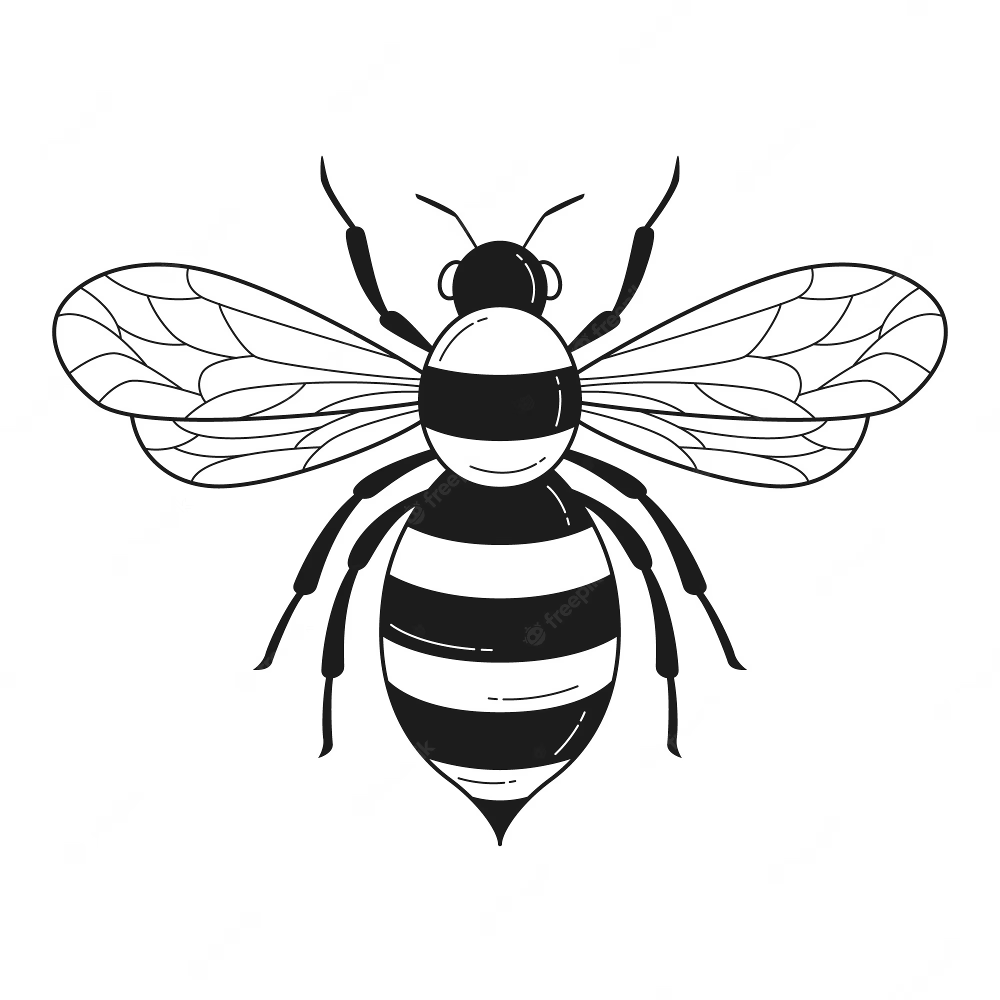 | Abelhas: As abelhas são um símbolo da Páscoa em algumas
culturas, representando a doçura e o trabalho árduo. Elas também são associadas à ressurreição e à vida, já que são responsáveis pela polinização. |
| 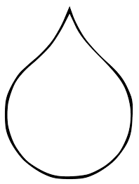 | Água: A água é um símbolo de purificação e renovação na tradição cristã da Páscoa.
O batismo é uma das práticas que utilizam a água como símbolo da purificação dos pecados e do renascimento espiritual |
| 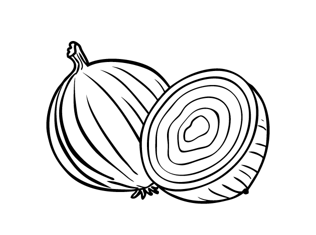 | Cebola: Em algumas culturas, como na Ucrânia, as cebolas são usadas para decorar ovos de Páscoa e representam a renovação da vida. |
| 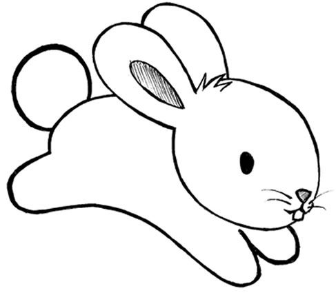 | Coelho da Páscoa: Na cultura ocidental, os coelhos são um símbolo
de fertilidade e reprodução. Eles também representam o renascimento e a primavera. |
| 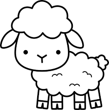 | Cordeiro: Além de ser um símbolo de sacrifício na tradição cristã,
o cordeiro também é usado em algumas culturas judaicas na celebração do Pessach, representando o cordeiro pascal que foi sacrificado no antigo ritual de Páscoa judaico. |
| 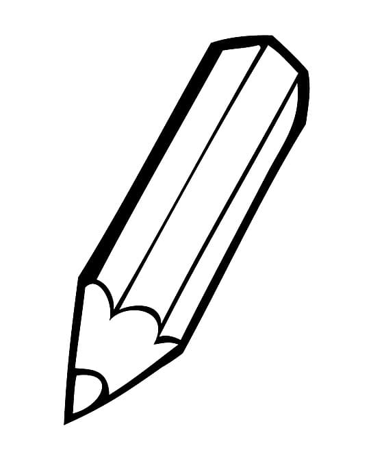 | Cores: As cores mais comuns associadas à Páscoa são o branco,
representando a pureza e a ressurreição, e o verde, representando a esperança e o renascimento da primavera. O amarelo e o dourado também são usados como símbolos de luz e renovação. |
| 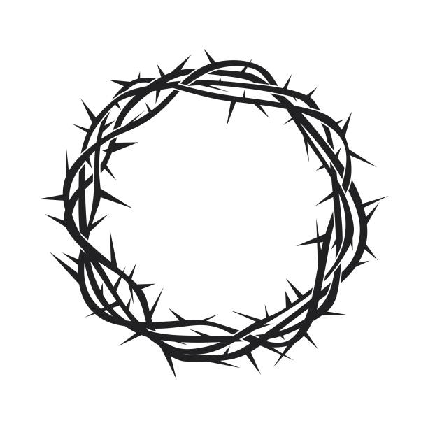 | Coroa de espinhos: A coroa de espinhos é um símbolo da crucificação de
Jesus e é frequentemente usada em representações artísticas da Páscoa. A coroa de espinhos é uma lembrança da dor e do sofrimento que Jesus suportou antes de sua ressurreição. |
| 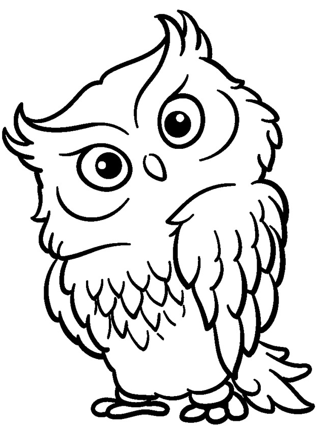 | Coruja: Em algumas tradições pagãs, as corujas são associadas à deusa
Ostara e à renovação da vida na primavera. Elas também são vistas como símbolos de sabedoria e intuição. |
| 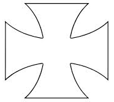 | Cruz de malta: A cruz de malta é um símbolo da Ordem dos Cavaleiros de Malta,
uma ordem religiosa e militar da Igreja Católica que tem forte conexão com a tradição da Páscoa. A cruz de malta é associada à proteção, caridade e ajuda aos necessitados. |
| 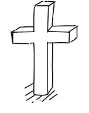 | Cruz: A cruz é o símbolo central da Páscoa cristã e representa
a crucificação e morte de Jesus, bem como sua ressurreição e vitória sobre a morte. |
| 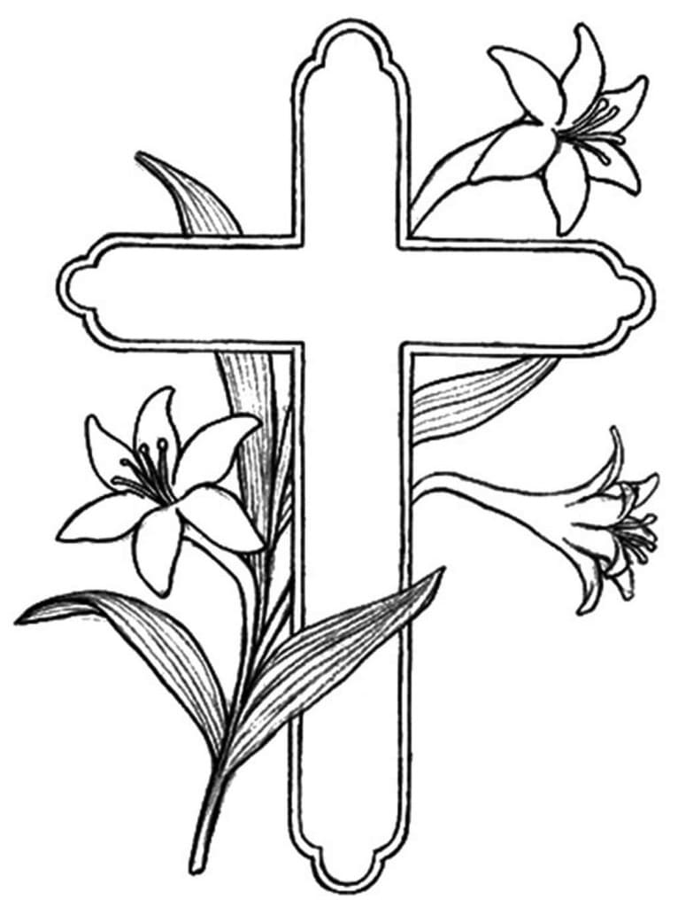 | Cruz de flores: Algumas tradições cristãs decoram as cruzes com flores
na celebração da Páscoa, representando a vida e a ressurreição de Jesus. As flores também podem representar a beleza e a alegria da primavera. |
| Folha de figueira: Em algumas tradições cristãs, as folhas de figueira são usadas para representar a árvore que Jesus amaldiçoou antes de sua crucificação. |
| 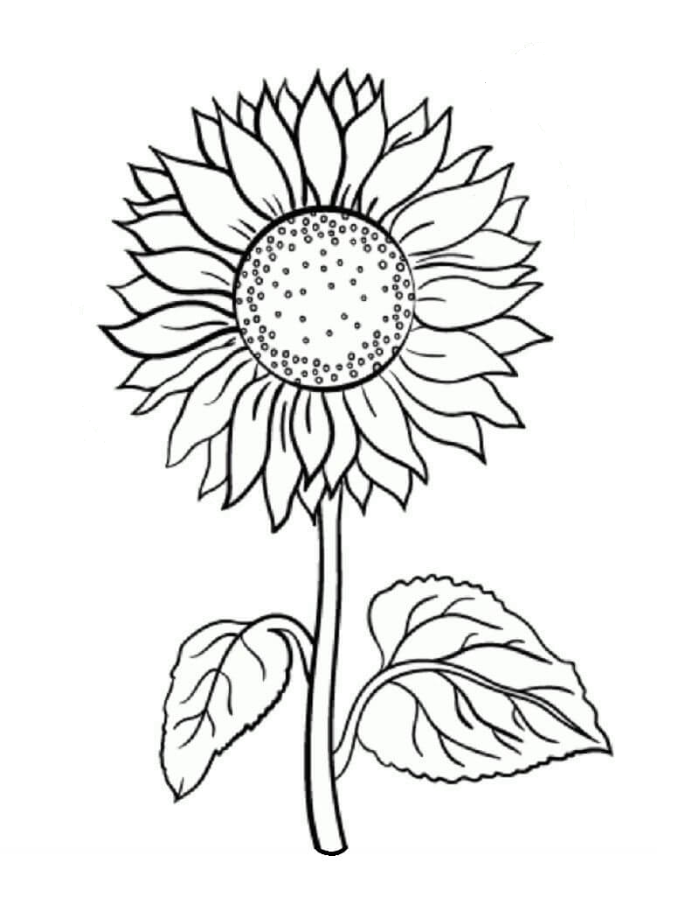 | Girassol: Os girassóis são um símbolo da Páscoa em algumas culturas,
representando a luz e a esperança da ressurreição de Jesus. |
| 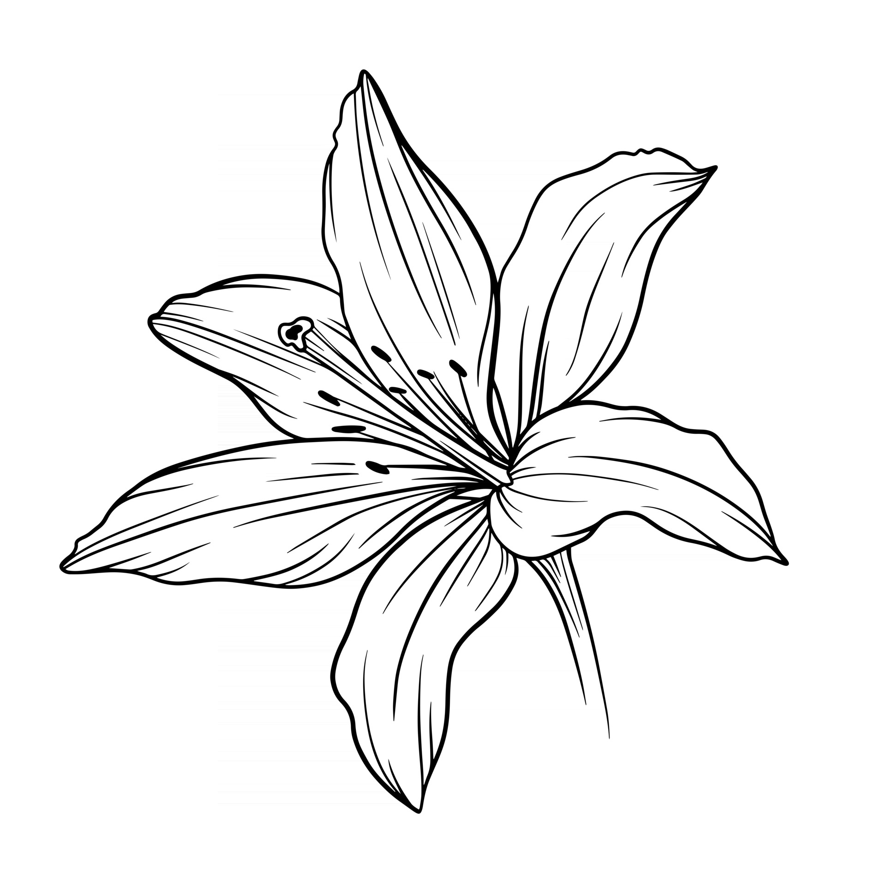 | Lírio: Os lírios são um símbolo comum da Páscoa, representando a pureza e a ressurreição de Jesus. Na tradição cristã, o lírio é associado à Virgem Maria, mãe de Jesus. |
| 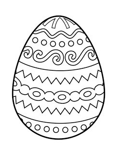 | Ovo de Páscoa: Os ovos são um dos símbolos mais antigos da Páscoa e representam a
vida, a fertilidade e o renascimento. Na tradição cristã, o ovo representa o túmulo vazio de Jesus após a ressurreição. |
| 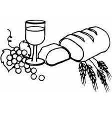 | Pão e Vinho: Na celebração da Última Ceia, Jesus compartilhou
pão e vinho com seus discípulos e os instruiu a fazerem isso em memória dele. O pão e o vinho representam o corpo e o sangue de Cristo. |
| 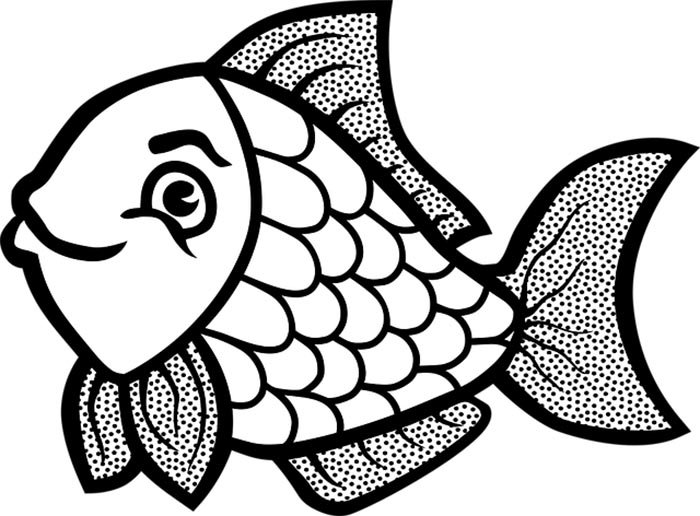 | Peixe: O peixe é um símbolo da Páscoa cristã que representa
a refeição que Jesus compartilhou com seus discípulos antes de sua crucificação. Também é um símbolo de vida e renascimento, já que os peixes põem muitos ovos. |
| 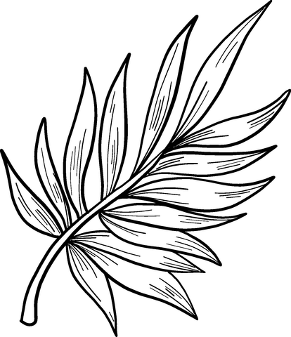 | Ramo de Palmeira: Os ramos de palmeira são usados na celebração do Domingo
de Ramos, que marca a entrada triunfal de Jesus em Jerusalém. Os ramos representam a vitória e a ressurreição. |
| 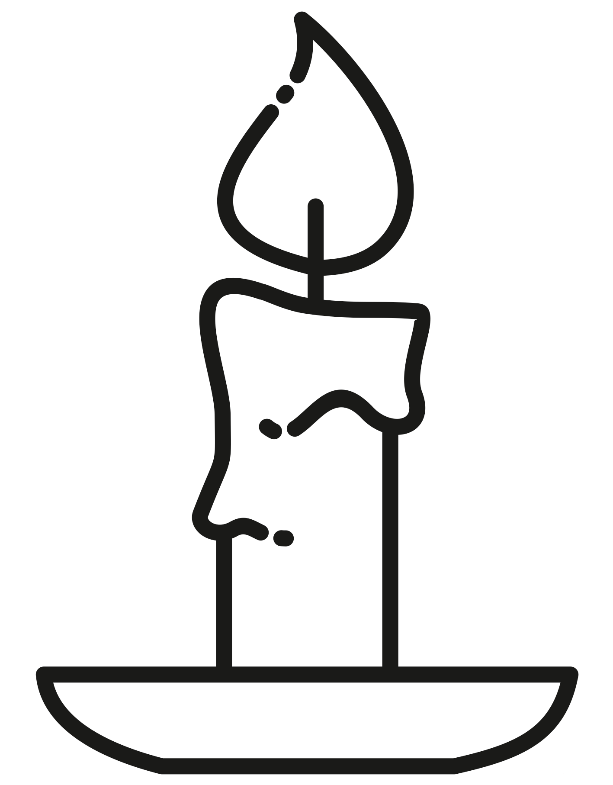 | Vela: As velas são usadas na Vigília Pascal, a celebração da ressurreição de Jesus, e representam a luz de Cristo que vence a escuridão da morte. |